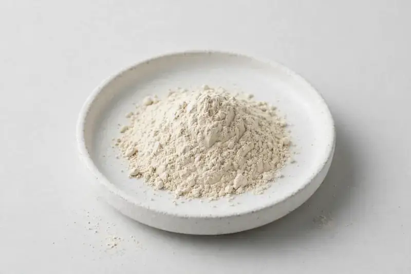

Amorphophallus konjac tuber extract standardized on glucomannan — a familiar fiber ingredient for satiety and weight-management formulations.

Overview
Konjac root extract is derived from the tuber of Amorphophallus konjac and standardized on glucomannan, a soluble polysaccharide widely used in fiber-focused supplement formats. Demand has grown alongside interest in satiety-fiber capsules, powders, and functional food concepts. We are a Xi'an-based trading company sourcing through vetted partner producers; buyers share their target glucomannan level and viscosity expectations, and we confirm feasibility and documentation honestly before any order.
Specifications below reflect commonly requested options in the market — not a stock list. Share your target spec and we'll confirm exactly what we can supply, honestly.
| Specification | Details |
|---|---|
| Botanical identity | Amorphophallus konjac tuber extract powder |
| Source material | Tuber |
| Marker compound | Glucomannan — commonly requested: 90%+ |
| Appearance | Off-white to light beige fine powder |
| Analytical methods | Methods referenced in buyer specifications: HPLC |
| Mesh size | Typically 80–100 mesh (confirm per inquiry) |
| Testing | COA/TDS arranged on request; scope agreed per your spec |
Applications
Documentation
We don't claim in-house labs or certifications we don't hold. COA and TDS documents can be arranged on request, and testing scope is agreed against your specification before supply.
FAQ
Related products
Amorphophallus konjac
Key marker: Glucomannan Content
View specs →Silybum marianum
Key marker: Silymarin
View specs →Ginkgo biloba
Key marker: Flavone Glycosides
View specs →Panax ginseng
Key marker: Ginsenosides
View specs →Salvia officinalis
Key marker: 10:1 / rosmarinic acid
View specs →Perilla frutescens
Key marker: ALA oil / rosmarinic acid
View specs →Send your target spec and volumes — we'll respond with a tailored quotation.
Request a Quote